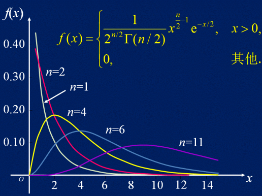
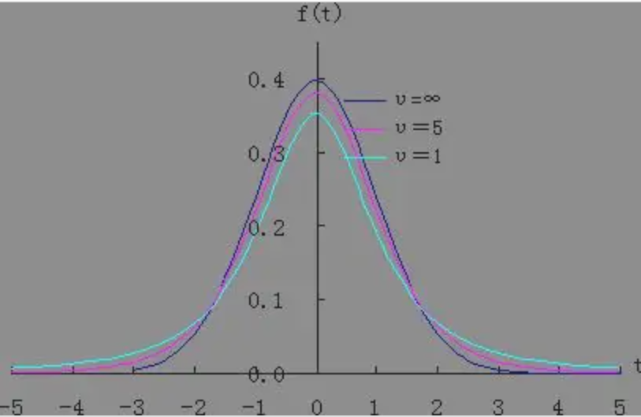
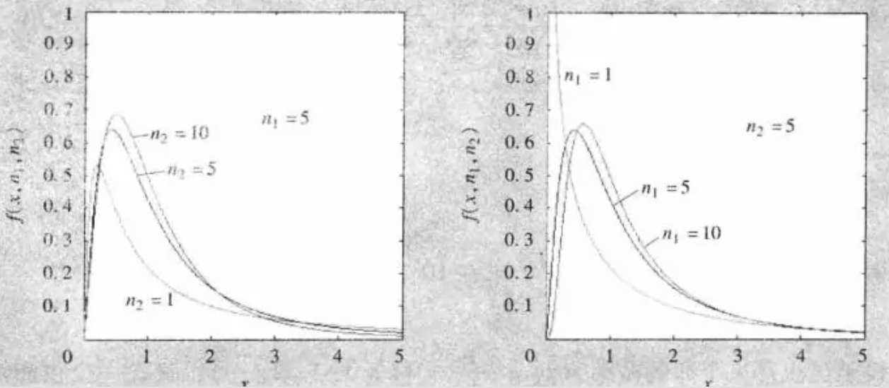

没有什么比年轻时代更感寂寞的了。——《こころ》
# 概率论
# 随机事件及其概率
# 随机事件及其运算
随机试验：
- 试验可在相同条件下重复进行。
- 试验的结果不止一个，且都明确可知。
- 每次试验之前，不知道哪个结果将会出现。
- 试验E 中的每一个可能结果称为基本事件，或称为样本点，所有基本事件组成的集合称为试验E 的样本空间，记为Ω。
- 具有某种性质的样本点构成的集合称为试验E 的随机事件，简称为事件。用大写字母表示。事件是样本空间的子集。
- 在随机试验中，事件 A 发生当且仅当 A 包含的某一样本点出现。
- 又样本空间中所有的样本点组成的事件称为必然事件，就用Ω 表示，而空集则为不可能事件。
事件的关系：包含、并、交、差、互不相容事件、对立事件都可以对应集合关系。
# 古典概型与几何概型
定义：设在相同的条件下，进行了 n 次试验，在这 n 次试验中事件 A 出现了 m 次，则称：
fn(A)=nm
为随机事件 A 在 n 次试验中出现的频率，m 称为频数。
- 经验表明，当试验次数相当大时，频率总是稳定于某一常数附近，以某一常数为中心作微小的摆动，这称为频率的稳定性。
定义：在大量重复试验中，若事件 A 发生的频率稳定在某一常数 p 附近摆动，则称改常数 p 为事件 A 发生的概率，记为P(A)=p。
- 注意 n 足够大，有fn(A)≈P(A)。
古典概型定义：设试验结果共有 n 个基本事件ω1,...,ωn，而且这些事件发生的可能性相等。事件 A 由其中的 m 个基本事件组成，则事件 A 的概率为：
P(A)=nm
- 注意古典概型要求了：
- 基本事件是有限可数的。
- 每次试验中，每个基本事件发生是等可能的。
几何概型定义：如果试验E 的可能结果可以几何地表示为某区域Ω 中的一个点，并且点落在Ω 中某区域 A 的概率与 A 的测度成正比，而与 A 的形状无关。则随机点落在区域 A 的概率为：
P(A)=mΩmA
其中mA 表示 A 的测度。
# 概率的公理化定理及其性质
- 几何概型中，由于计算事件的概率需要几何图形的测度，因此不能把不可测集当作事件。于是我们可以递归定义事件集合。（即产生了全部的合法事件）
- $\Omega \in \mathscr{F} $
- 若A∈F，则\bar{A} \in \mathscr
- 若An∈F,n=1,2,3,...，则⋃n=1∞An∈F（其实这个要求结合上前两个也就可以证明集合对交封闭）
概率的公理化：对于样本空间的一个事件域，若对于事件域中的任何一个事件 A，都有一个实数P(A) 与之对应，并且满足：
-
非负性：P(A)≥0
-
规范性：P(Ω)≥0
-
可列可加性：对于两两互不相容的可列个事件A1,...,An,...，有
P(i=1∑∞Ai)=i=1∑∞P(Ai)
则称P(A) 为事件 A 的概率。
显然概率有可列可加，可减，单调性等等。
- 上下连续性：若有A1⊂A2⊂...⊂An⊂...，则：
P(i=1⋃∞Ai)=n→∞limP(An)
若有A1⊃A2⊃...⊂An⊃...，则：P(i=1⋂∞Ai)=n→∞limP(An)
概率空间：三元组(Ω,F,P)。
# 条件概率与事件独立性
- 事件 A 发生的前提下，事件 B 发生的概率称为条件概率，记为：P(B∣A)。
设(Ω,F,P) 是一个概率空间，A∈F，P(A)>0。则对任意B∈F，记：
P(B∣A)=P(A)P(AB)
若对概率空间中的两个事件 A，B，有：
P(AB)=P(A)P(B)
则称事件 A 与事件 B 是相互独立。否则称他们不相互独立，或相依的。
- 定理：若事件 A 与 B 相互独立，则事件Aˉ 和B 也是相互独立的。
对于三个事件A,B,C，若有：
⎩⎪⎪⎨⎪⎪⎧P(AB)=P(A)P(B)P(AC)=P(A)P(C)P(BC)=P(B)P(C)
则称它们两两独立。若有：
⎩⎪⎪⎪⎪⎨⎪⎪⎪⎪⎧P(AB)=P(A)P(B)P(AC)=P(A)P(C)P(BC)=P(B)P(C)P(ABC)=P(A)P(B)P(C)
则称 A, B, C 相互独立。
- 相互独立可以推出两两独立，但两两独立无法推出相互独立。一般地，对于一个事件序列A1,...,An,...，若其中任意有限个事件都相互独立，则称A1,...,An,... 是独立事件序列。
# 全概率公式与贝叶斯公式
定义：设A1,...,An 是一组事件，若它们两两互不相容，而且：
i=1∑nAi=Ω
则称它们是样本空间的一个分割，亦称完备事件组。
全概率公式：对于Ω 的一个分割A1,...,An,P(Ai)>0, 有：
∀B∈F,P(B)=i=1∑nP(B∣Ai)
贝叶斯公式：对于概率空间(Ω,F,P)，A1,A2,...,An 是样本空间的一个分割，则对任意B∈F，P(B)>0，有：
P(Ak∣B)=∑j=1nP(Aj)P(B∣Aj)P(Ak)P(B∣Ak),k=1,2,...,n
- 我愿称之为展开的概率反演。P(A∣B)=P(AB)/P(B)=P(AB)/P(A)∗P(A)/P(B)=P(B∣A)∗P(A)/P(B)。
# 伯努利概型
若试验E1 的任一结果（事件）都与试验E2 的任一结果（事件）相互独立，则称这两个试验相互独立。若试验E1,...,En 相互独立，则称其为 n 重重复试验。
若试验E1 的可能结果只有A 和Aˉ，则称其为伯努利试验。若将E1 重复进行 n 次，且 n 次试验都相互独立，则称为 n 重伯努利试验。
# 随机变量及其分布
# 随机变量与分布函数
定义：设X(ω) 是定义在概率空间(Ω,F,P) 上的单值实函数，即对每个ω∈Ω，都有X(ω)∈R，并且对任意x∈R，{ω∣X(ω)≤x} 都是随机事件（即其∈F）则称X(ω) 是概率空间上的随机变量。通常简记为 X。
- 分布函数：X∼F(x)=P(X≤x)。定理：
- 单调不减：a<b⇒F(a)≤F(b)。
- 0≤F(x)≤1,limn→+∞F(x)=1,limn→−∞F(x)=−1。
- 右连续性：F(x) 在任何点 x 处右连续。
- 用⋂{X≤x+n1}={X≤x} 和右极限=limn→∞F(x+n1) 来证明。
- 随机变量有离散型，非离散型（连续型，奇异型）等等分类。
# 离散型随机变量及其分布
设离散型随机变量 X 的所有可能取得值为x1,...,xn，而 X 取xk 的概率为pk，即P(X=xk)=pk(k=1,...,n)。
称上式为随机变量 X 的概率分布律。
-
常见分布：
-
退化分布：P(X=C)=1
-
两点分布：P(X=0)=p,P(X=1)=1−p
-
二项分布：P(X=k)=C_n^kp^k(1-p)^
- 当(n+1)p 为整数时，在k=(n+1)p,(n+1)p−1 处概率取得最大值。若不为整数，则在[(n+1)p] 取得最大值。于是[(n+1)p] 称为二项分布B(n,p) 的最可能出现次数，或称最可能值。
- E[X]=np,D(X)=np(1−p)
-
几何分布：P(X=k)=(1−p)k−1p，记为X∼G(p)。有∑i=1∞P(X=k)=1。
-
超几何分布：N 件产品中有 M 件次品，现抽 n 件出来，其中的次品数服从超几何分布：
P(X=k)=CNnCMkCN−Mn−k,k=1,..,min(n,M)
泊松定理：设随机变量Xn∼B(n,pn),(n=1,2,...)。若有limn→∞npn=λ，则有：
n→∞limP(Xn=k)=k!λke−λ
-
泊松分布：X∼P(λ)：
P(X=k)=k!λke−λ,k=0,1,2,...
自然界很多稀疏现象都服从泊松分布，故其又称为稀疏现象律。泊松分布最可能值为λ,λ−1 或[λ]。
- E[X]=λ,D(X)=λ
# 连续型随机变量及其分布
定义：设随机变量 X 的概率分布函数为F(x)，如果存在一个函数f(x)，对于任意实数 x，都有：
F(x)=∫−∞xf(t)dt,x∈R
则称 X 为连续性随机变量，f(x) 为 X 的概率密度函数。
-
连续型随机变量有：P(X=a)=0,P(a≤X≤b)=P(a<X≤b)=P(a≤X<b)=P(a<X<b)。
-
一个事件概率为零，他并不一定是不可能事件（空集）。同样，概率为 1 的也不一定是必然事件。
-
常见分布：
-
均匀分布：X∼U[a,b]：
f(x)={b−a10a≤x≤belse
-
指数分布：X∼E(λ):
f(x)={λe−λx0x>0x≤0
- 指数分布具有无记忆性：P(X>s+t∣X>s)=P(X>t)。
-
E[X]=\frac{1}{\lambda},D(X)=\frac{1}
-
正态分布：X∼N(μ,σ2):
f(x)=2πσ1e−2σ2(x−μ)2,x∈R
- 标准正态分布的概率函数和分布函数记为φ(x),Φ(x)。有Φ(−x)=1−Φ(x)（关于 y 轴对称）。
- 3σ 原则：正态分布几何全部的取值都落在[μ−3σ,μ+3σ] 内。
# 随机变量函数的分布
# 多维随机变量及其分布
# 二维随机变量及其分布
定义：设(X,Y) 是二位随机变量，对任意实数x,y，二元函数 $ F (x,y)=P (X\leq x,Y\leq y)称为随机变量 (X,Y)$ 的联合分布函数。
- 特别地，如果二阶偏导数f(x,y) 连续（即与求偏导顺序无关），则定义f(x,y)=∂x∂y∂2F(x,y) 为联合密度函数。
# 边缘分布
记二维随机变量的分布函数F(x,y) 关于X 和Y 的边缘分布函数为FX(x)=F(x,+∞),FY(y)=F(+∞,y)。同样也有边缘概率密度函数：fX(x)=∫−∞+∞f(x,y)dy。
- 二维正态分布的边缘分布仍为正态分布。
- 边缘分布的理解就是不论 y 取什么，只考虑 x 的取值情况。就像对多量子比特系统中，对单一比特进行测量之后引起的系统的坍塌。
# 条件分布
条件概率分布函数的定义为：FY∣X(y∣x)=fX(x)F(x,y)=∫−∞yfX(x)f(x,v)dv，条件概率密度函数为f_{Y|X}(y|x)=\frac{f(x,y)}
# 随机变量的独立性
若对二维随机变量(X,Y)，有∀x,y.F(x,y)=FX(x)FY(y) 或f(x,y)=fX(x)fY(y)（两式等价），则称 X 与 Y 相互独立。
# 二维随机变量函数的分布
令Z=g(X,Y)，一般会先求Z 的分布函数FZ(z)=∬g(x,y)≤zf(x,y)dxdy，然后再求导得到fZ(z)。
- 若Z=X+Y，有fZ(z)=∫−∞+∞f(x,z−x)dx=∫−∞+∞f(z−y,y)dy。（令u=x+y）概率密度函数卷积公式
- 若Z=YX，有fZ(z)=∫−∞+∞f(yz,y)∣y∣dy。
- 若Z=max(X,Y)，有FZ(z)=FX(z)FY(z)。（若 X，Y 相互独立）
- 若Z=min(X,Y)，有FZ(z)=1−[1−FX(z)][1−FY(z)]。
# 随机变量的数字特征与极限定理
# 数学期望
设连续型随机变量X 的概率密度函数为f(x)，若积分∫−∞+∞xf(x)dx 绝对收敛，则称该积分值为 X 的数学期望。
-
若积分∫−∞+∞g(x)f(x)dx 绝对收敛，则有：
E[g(X)]=∫−∞+∞g(x)f(x)dx
-
对任意随机变量 X，Y 都有E[X+Y]=E[X]+E[Y]，但只有当它们独立时，才有E[XY]=E[X]E[Y]。
-
柯西 - 施瓦泽不等式：(E[XY])2≤E[X2]E[Y2]。
# 方差
设 X 是随机变量，如果E[(X−E(X))2] 存在，则称之为 X 的方差，记为D(X)。
- D(X)=E[(X−E[X])2]=E[X2]−2E[X]E[X]+E[X]2=E[X2]−E[X]2。
# 协方差与相关系数
定义Cov(X,Y)=E[(X−E[X])(Y−E[Y])] 称为随机变量X 和Y 的协方差，ρXY=D(X)D(Y)Cov(X,Y) 称为随机变量 X 和 Y 的相关系数。
-
常用计算协方差方法：Cov(X,Y)=E[XY]−E[X][Y]。
-
性质：
- Cov(X,Y)=Cov(Y,X)
- Cov(a1X+b1,a2Y+b2)=a1a2Cov(X,Y)
- Cov(X1+X2,Y)=Cov(X1,Y)+Cov(X2,y)
- D(X±Y)=D(X)+D(Y)±2Cov(X,Y)
- X,Y 独立⇔Cov(X,Y)=0
- ∣ρXY∣≤1，且取等的充要条件是X 和Y 呈线性关系。
-
一般来说，∣ρXY∣ 越大，X 和 Y 的 “线性相关” 越强，若ρXY=0，则它们独立。注意，当且仅当ρXY=0 时称他们不相关。
-
X 和Y 独立⇒Cov(X,Y)=0，反之不一定成立。譬如X∼U[−1,1],Y=X2。
称E[Xk] 为 X 的 k 阶原点矩。
称E[(X−E[X])2] 为 X 的 k 阶中心矩。
称E[XkYl] 为 X 和 Y 的 k+l 阶混合矩。
称E[(X−E[X])k(Y−E[Y])l] 为 X 和 Y 的 k+l 阶中心混合矩。
# 大数定律
切比雪夫不等式：
∀ε>0,P(∣X−E[X]∣≥ε)≤ε2D(X)
-
切比雪夫大数定律：
设随机变量X1,...,Xn,... 相互独立，且有相同的数学期望和方差，即：E[Xk]≡μ,D(Xk)≡σ2，则有：
∀ε>0,n→∞limP(∣n1k=1∑nXk−μ∣<ε)=1
-
辛钦大数定律：
设随机变量X1,...,Xn,... 独立同分布，且有相同的数学期望，即E[Xk]≡μ，则：
∀ε>0,n→∞limP(∣n1k=1∑nXk−μ∣<ε)=1
它不要求方差的存在，但要求同分布。
-
伯努利大数定律：
在伯努利概型中（n 次独立重复试验，k 为事件 A 发生的次数，每次试验 A 发生的概率为 p），有：
∀ε>0,n→∞limP(∣nkn−p∣<ε)=1
伯努利大数定律从理论上说明任一随机事件的频率具有稳定性。因此可以在大量试验后，将发生的频率近似作为概率。
# 中心极限定理
很多独立随机变量的极限分布是正态分布。
-
列维 - 林德伯格中心极限定理：
设X1,X2,...,Xn,... 是独立同分布的随机变量：E[Xk]≡μ,D(Xk)≡σ2，则有：
∀x,n→∞limP(σn∑i=1nXk−nμ≤x)=Φ(x)
即独立同分布的随机变量之和∑i=1nXk 近似于正态分布N(nμ,nσ2)。所以σ/nXˉ−μ 近似服从N(0,1)。
-
蒂莫夫 - 拉普拉斯中心极限定理：
设Yn 服从二项分布B(n,p)，则有：
∀x,n→∞limP(np(1−p)Yn−np≤x)=Φ(x)
即 n 充分大时，二项分布近似于服从N(np,np(1−p))。
-
不同分布的中心极限定理：
设X1,...,Xn,... 是独立不同分布的随机变量，D(Xi)=σi2。若：
{limn→∞∑i=1nσi2=∞limn→∞nmax(σi2)=0
则：
Y=n→∞limn∑i=1nXi
服从正态分布。它表示，由足够多的随机变量，但每个随机变量又不起决定性作用，他们的平均随机变量服从正态分布。
# 数理统计
# 数理统计基本知识
# 总体与样本
简单随机样本需要满足：
- 独立性：X1,...,Xn 是相互独立的随机变量。
- 代表性：X1,...,Xn 要与总体X 有相同的分布。
设X1,...,Xn 为来自总体X 的简单随机样本，则有：
- X1,...,Xn 的联合分布函数为：FX1,...,Xn(x1,...,xn)=∏i=1nF(xi)，其中F(x) 是总体X 的分布函数。
- E[Xi]≡E[X],D(Xi)≡D(X)。
# 统计量与三大分布
不含任何未知参数，只关于样本的实值函数称为样本的一个统计量。常用统计量：
-
均值：Xˉ=∑i=1nXi
-
样本方差：S2=n−11∑i=1n(Xi−Xˉ)2=n−11(∑i=1nXi2−nXˉ)，这里为什么是除以n−1 呢，是因为要保证标准差的无偏性，在后面 “估计量的优劣评价” 中会提到。
-
样本标准差：S=\sqrt
-
样本 k 阶原点矩：Ak=n1∑i=1nXik
-
样本 k 阶中心矩：Bk=n1∑i=1n(Xi−Xˉ)2
-
顺序统计量：最小、最大统计量max(X1,...,Xn),min(X1,...,Xn)
二维统计量：
- 协方差：SXY2=n−11∑i=1n（Xi−Xˉ)(Yi−Yˉ)
- 样本相关系数：\rho_{XY} = \frac{S_{XY}^2}
三大分布：
-
χ2 分布：
设随机变量X1,...,Xn 独立且都服从标准正态分布，则：
χ2=X12+...+Xn2fχ2(x)={2n/2Γ(n/2)1x2n−1e−x/20x>0x≤0
有E[χ2(n)]=n,D[χn(n)]=2n。
χ2(m)+χ2(n)=χ2(m+n)。图像：

-
t 分布（学生分布）：
设随机变量X,Y 相互独立，且X∼N(0,1),Y∼χ2(n)，则：
t=Y/nXft(x)=nπΓ(n/2)Γ[(n+1)/2](1+nx2)−2n+1
有E[t(n)]=0(n>1),D[t(n)]=n−2n(n>2)。
当n≥30 时，已经可以将 t 分布近似看成标准正态分布。图像：

-
F 分布：
设随机变量X 和Y 相互独立，且X∼χ2(m),Y∼χ2(n)，则：
F=Y/nX/m
有E[F(m,n)]=n−2n,D[F(m,n)]=m(n−2)2(n−4)2n2(m+n−2)，且F∼F(m,n)⇒F1∼F(n,m)。图图：

这些图一个比一个丑
上分位数点：P(X>xα)=1−F(xα)=α，则xα 称为 X 的上α 分位点。
- 正态分布的上分位点记为uα。
- n≥40 时，χα2(n)≈21(uα+2n−1)2
- 由 t 分布的对称性，有t1−α(n)=−tα(n)
- F_{1-\alpha}(m,n)=\frac{1}
顺序统计量的分布：设总体 X 具有分布函数F(x)，其密度函数为f(x)。则：
- X_{(1)}=min(X_1,...,X_n),f_{X_{(1)}}(x) = nf(x) [1-F(x)]^
- X_{(n)}=max(X_1,...,X_n),f_{X_{(n)}}(x) = nf(x)[F(x)]^
- fX(1),X(n)(x,y)=n(n−1)f(x)f(y)[F(y)−F(x)]n−2(x≤y)。
- fX(k)(x)=kCnkF(x)k−1[1−F(x)]n−kf(x)
# ☆正态总体的抽样分布
设X1,...,Xn 是来自正态总体X∼N(μ,σ2) 的一组样本，则：
- Xˉ∼N(μ,nσ2)
- σ2(n−1)S2∼χ2(n−1)
- S/nXˉ−μ∼t(n−1)
- Xˉ 与S2 相互独立
设X1,...,Xn 是来自正态总体X∼N(μ1,σ12) 的一组样本，设Y1,...,Yn 是来自正态总体Y∼N(μ2,σ22) 的一组样本，且两组样本间独立。则：
- SY2/σ22SX2/σ12∼F(m−1,n−1)
- 剩下两个分布太麻烦了
# 参数估计和假设检验
# 参数的点估计
参数估计是根据样本对总体未知参数（如均值，方差）等进行估计的一种统计推断方法。
- 参数点估计：构造一个统计量θ^=θ^(X1,...,Xn)，直接用θ^ 作为θ 的估计值。
# 矩估计
- 矩估计法是用样本的 k 阶原点矩作为总体的 **k 阶原点矩E[Xk]** 的估计。
考虑要估计的参数是θ1,...,θm，于是可以列出方程组：
⎩⎪⎪⎪⎪⎨⎪⎪⎪⎪⎧E[X]=f1(θ1,...,θm)=n1∑i=1nXiE[X2]=f2(θ1,...,θm)=n1∑i=1nXi2...E[Xm]=fm(θ1,...,θm)=n1∑i=1nXim
然后可以解方程组得到一组解(θ1^,...,θm^)，就可以作为参数(θ1,...,θm) 的估计。
根据大数定律，有：
∀ε>0,n→∞limP(∣n1i=1∑nXim−E[Xm]∣<ε)=1
所以样本的 k 阶原点矩就是总体的 k 阶原点矩的一个合理估计。
[例]：已知总体 X 的一组样本X1,X2,...,Xn，试估计总体的方差和均值。（假设它们存在）
-
列出方程组：
{μ=E[X]=n1∑i=1nXi=Xˉμ2+σ2=E[X2]=n1∑i=1nXi2
解得：
μ^=Xˉσ2^=n1i=1∑nXi2−Xˉ2=n1i=1∑n(Xi−Xˉ)2=nn−1S2
-
从例题中，可以看到，估计实际上就是把总体的参数用以样本为自变量的函数来表示，当我们获得了一组样本值时，我们就可以对总体进行合理猜测，这就是统计，用获得的一部分数据去估计整体。
# 最大似然估计
考虑我们有一组样本值x1,...,xn，于是事件A={X1=x1,...,Xn=xn} 发生的概率是一个关于参数θ=(θ1,...,θm) 的函数L(θ)。我们希望取得θ 的一个最大似然估计θ^，此时L(θ^) 取得最大值。
-
L(θ) 的确定：
- 若总体是离散型的，则显然：P(X1=x1,...,Xn=xn)=∏i=1nP(Xi=xi)，而P(Xi=xi) 是关于θ 的函数。
- 若总体是连续型的，则要求L(θ)=∏i=1n∫xixi+dxif(t)dt≈∏i=1nf(xi)dxi(dxi→0)，f(x) 是概率密度函数。
-
θ^ 的确定：
设X∼N(μ,σ2)，已知X 的一组样本观测值x1,...,xn，求μ,σ2 的最大似然估计。
L(μ,σ2)=i=1∏nf(xi)=i=1∏n2πσ1e−2σ2(xi−μ)2lnL(μ,σ2)=−2nln(2π)−2nlnσ2−2σ21i=1∑n(xi−μ)2{∂μ∂lnL(μ,σ2)=0∂σ2∂lnL(μ,σ2)=0⇒μ^=xˉ,σ2^=nn−1s2
- 注意严格来说，最大似然估计是要知道样本的观测值的，当然也可以设成字母表示a1,...,an。但用X1,...,Xn 来表示是不合理的。
# 估计量优劣的评价标准
通常用均方误差MSE(θ^)=E[(θ−θ^)2] 来评价估计量的偏离程度。
-
MSE(θ^)=E[[(θ^−E[θ^])+(E[θ^]−θ)]2]=E[(θ^−E[θ^])2]+2(E[θ^]−θ)E[θ^−E[θ^]]+E[(E[θ^]−θ)2]=E[(θ^−E[θ^])2]+(E[θ^]−θ)2=D(θ^)+(E[θ^]−θ)2
其中，中间项为 0 是因为E[θ^−E[θ^]]=E[θ^]−E[θ^]=0。
式子中将θ^ 作为随机变量，而把θ 作为已知常量。我的理解是，先给出一组样本X1,...,Xn，然后这些样本都是和总体同分布的随机变量，此时可以进行点估计：θ^=f(X1,...,Xn)，所以可以对θ^ 取期望。然后假如已知了参数θ，此时我们可以θ^ 成了未知量，因为样本没有被观测。然后我们可以计算出θ^ 偏离已知的θ 的距离的平方的期望。
-
当E[θ^]−θ=0 时，即E[θ^]=θ 时，我们称估计量是无偏的。这是好满足的。
-
但D(θ^)=0 是不可满足的，因为若θ^ 是一个常数而与样本无关了，那显然不太合理。通常我们在无偏的估计中，选择方差最小的，也就是最有效的，称为最小无偏估计。
若E[θ^]=θ，则称θ^ 是θ 的无偏估计，若limn→∞E[θ^]=θ，则称θ^ 是θ 的渐进无偏估计。否则就是有偏估计。
-
这里可以解释下之前留下的问题，为什么样本方差S2 中除以的是n−1。我们来证明：E[S2]=σ2，即S2 是σ2 的无偏估计。
E[S2]=n−11E[i=1∑nXi2−2Xˉi=1∑nXi+i=1∑nXˉ2]=n−11E[i=1∑nXi2−nXˉ2]=n−11(i=1∑nE[Xi2]−nE[Xˉ2])=n−1n(E[X2]−E[Xˉ2])
而
E[Xˉ]=μ,D[Xˉ]=nσ2⇒E[Xˉ2]=μ2+nσ2E[X]=μ,D[X]=σ2⇒E[X2]=μ2+σ2∴E[S2]=n−1n(μ2+σ2−μ2−nσ2)=σ2
因此S2 是σ2 的一个无偏估计。
-
事实上，样本均值和样本方差总是总体均值和总体方差的无偏估计。
若对任意的ε>0，有limn→∞P(∣θ−θn^∣≥ε)=0，则称θ^(X1,...,Xn) 是θ 的一个相合（一致）估计。
- 若limn→∞E[θn^]=θ,limn→∞D(θn^)=0，则θ^n 是θ 的一个相合估计。
# 参数的区间估计
设θ^1,θ^2 是两个统计量，若P(θ^1≤θ≤θ^2)=1−α，则称随即区间[θ^1,θ^2] 是θ 的一个区间估计或置信区间，1−α 称为置信水平或置信度。
- 一般来说，置信度越高，精确性（区间长度）越差（越长）。
求解置信区间的一般方法为：
- 找一个与要估计的参数θ 有关的统计量T，一般是θ 的一个良好的点估计θ^。
- 设法找出T 和θ 的某一函数H(T,θ)，要求 H 的分布已知且与T,θ 无关，称为枢轴变量。
- 寻找合适的常数c,d 使得P(c≤H≤d)=1−α。
- 将c≤H≤d 等价变形为θ^1≤θ≤θ^2。
正态分布的置信区间：
| 评估参数 |
条件 |
枢轴变量及其分布 |
置信区间 |
| μ |
σ2 已知 |
σ/nXˉ−μ∼N(0,1) |
[Xˉ−uα/2nσ,Xˉ+uα/2nσ] |
| μ |
σ2 未知 |
S/nXˉ−μ∼t(n−1) |
[Xˉ−tα/2(n−1)nS,Xˉ+tα/2(n−1)nS] |
| σ2 |
μ 已知 |
∑i=1nσXi−μ2∼χ2(n) |
[χα/22(n)∑(Xi−μ)2,χ1−α/22(n)∑(Xi−μ)2] |
| σ2 |
μ 未知 |
σ2(n−1)S2∼χ2(n−1) |
[χα/22(n−1)(n−1)S2,χ1−α/22(n−1)(n−1)S2] |
# 假设检验
只对总体的某些未知参数作出假设，通过抽样来判断假设是否成立，这种检验称为参数检验。
只对未知分布函数的类型或者它的某些特性提出假设，然后对这种假设进行检验，被称为非参数检验。
参数检验的步骤 —— 以对期望假设为例：
-
建立假设：
H0:μ=5800,H1:μ=5800
H0 称为原假设，H1 称为备择假设。
-
选取检验统计量（不能含未知参数）：
通过比较原假设成立时统计量的分布和备择假设成立时统计量的分布，得出对原假设不利的事件。若总体的方差已知，可以选择统计量：
U=σ/nXˉ−5800
H0 成立时，U∼N(0,1)，H1 成立时，U∼N(σ/nμ−5800,1)。所以我们可以选择对H0 不利的事件为{∣U∣>C}。若事件发生了，我们便拒绝H0。
-
选取检验显著性水平α 与临界值，进而确定H0 的拒绝区域。
在我们总是倾向于 “保护 “原假设的。于是我们默认在原假设成立的前提下，若对H0 不利的事件还是发生了，就拒绝原假设：
P(∣U∣>C∣H0)=α
若α=0.05，则可以得出P(∣U∣>C∣H0)=0.05⇒C=u0.025。因为H0 成立时，U 是标准正态分布。
-
做判断：
根据样本的观测值，计算U，和C 进行比较。若∣U∣>C 就拒绝H1。
这里对P(∣U∣>C∣H0)=α 我的理解是：若H0 成立的话，发生∣U∣>C 的概率很小很小，所以现实中发生了的话我们只好认为H0 不成立了。
假设检验不一定原假设一定形如a=a0，其本质是把参数θ 分成两个不相交的空间：
H0:θ∈Θ0,H1:θ∈Θ−Θ0=Θ1
若Θ1 在Θ0 的两侧（如例子）就叫做双侧检验，否则也可以有Θ1 在Θ0 的右侧或左侧的单侧检验。
假设检验可能有两种错误，弃真和存伪
- 弃真：H0 成立，但拒绝事件∣U∣>C 发生了，所以拒绝了H0。弃真的概率就是显著性水平α。
- 存伪：H1 成立，却接受了H0。它的概率比较难以计算，记为β。
事实上，有当样本数n 固定时，α 增大β 就会减小，α 减小β 就会增大。但增大样本数n 可以使得α 和β 都减小。（抽样的值多了更准确）
给出一个样本观测值U，能做出” 拒绝H0“的最小的α 值称为检验的 p 值。
- 一般模拟抽样的软件不仅会告诉你模拟抽取的样本观测值，同样也会告诉你该观测值下的 p 值。这样你就不需要去比较U 和uα/2 了，而只用比较α 和 p。
# 正态总体参数的假设检验
| 条件 |
原假设H0 |
备选假设H1 |
检验统计量 |
拒绝域 |
| σ2=σ02 已知 |
μ=μ0 |
μ=μ0 |
U=σ0/nXˉ−μ0 |
$ |
U |
>u_{\alpha/2}$ |
|
μ≤μ0 |
μ>μ0 |
服从正态分布 |
U>uα |
|
μ≥μ0 |
μ<μ0 |
|
U<−uα |
| σ2 未知 |
μ=μ0 |
μ=μ0 |
T=S/nXˉ−μ0 服从 t 分布 |
$ |
T |
>t_{\alpha/2}(n-1)$ |
|
μ≤μ0 |
μ>μ0 |
|
T>tα(n−1) |
|
μ≥μ0 |
μ<μ0 |
|
T<−tα(n−1) |
| μ=μ0 已知 |
σ2=σ02 |
σ2=σ02 |
χ2=∑i=1n(σ0Xi−μ0)2 服从卡方分布 |
χ2>χα/22(n) 或χ2<χ1−α/22(n) |
|
σ2≤σ02 |
σ2>σ02 |
|
χ2>χα2(n) |
|
σ2≥σ02 |
σ2<σ02 |
|
χ2<χ1−α2(n) |
| μ 未知 |
σ2=σ02 |
σ2=σ02 |
χ2=σ02(n−1)S2 服从卡方分布 |
χ2>χα/22(n−1) 或χ2<χ1−α/22(n−1) |
|
σ2≤σ02 |
σ2>σ02 |
|
χ2>χα2(n−1) |
|
σ2≥σ02 |
σ2<σ02 |
|
χ2<χ1−α2(n−1) |
简单证明下对方差估计的部分，怎么考虑不等号呢？以第八行的情况为例，若H0 成立，就有：
χ2=i=1∑n(σ0Xi−μ0)2=σ02σ2i=1∑n(σXi−μ0)2≤χ2(n)
若H1 成立，则有χ2>χ2(n)。（σ2 是真实的方差，σ02 是假设的方差）所以χ2 的观测值越大，对H0 越不利，对X1 越有利。
<P(χ2>χα2(n)∣H0)≤P(χ2>χα2(n)∣σ2=σ02)=α
所以选择的拒绝域是χ2>χα2(n)。
# 一元线性回归和方差分析
# 一元线性回归
已知随机变量Y 满足以下关系：
{Y=β0+β1X+εE[ε]=0,D(ε)=σ2
σ2 未知。那么我们可以通过抽取一堆样本(x1,y1),...,(xn,yn) 去估计β0 和β1 的值，得到回归直线Y=β0^+β1^X。
再根据这条直线，可以给出X 得到 Y 的估测值Y^。
注意：一元线性回归中，默认自变量是非随机变量。怎么理解呢，可以理解为，给定一个x0，有一个随机变量Y，而x0 是随机变量Y 的一个参数，影响着Y 的分布。而这个影响实际上就是线性影响着。但参数X 总是会被给出的，而参数β0,β1 是可以用样本估计的，于是这三个参数都有值了后就可以讨论Y 的分布。而回归问题，其实就是默认参数X 的值已知非随机的情况下，分析Y 和X 的关系。
最小二乘法：
-
定义偏差平方和：
Q(β0,β1)=i=1∑n[yi−(β0+β1xi)]2
我们要找出β0 和β1 的合理取值β0^,β1^，使得Q(β0^,β1^) 尽量小。于是有：
{∂β0∂Q(β0,β1)=0∂β1∂Q(β0,β1)=0⇒{β0^+xˉβ1^=yˉnxˉβ0^+β1^∑i=1nxi2=∑i=1nxiyi
解得：
β1^=LxxLxy,β0^=yˉ−xˉβ1^Lxy=i=1∑n(xi−xˉ)(yi−yˉ)=i=1∑nxiyi−nxˉyˉLxx=i=1∑n(xi−xˉ)2=i=1∑nxi2−nxˉ2
这样估计的参数β0,β1 的值的方法称为最小二乘法（OLS），得到了一元线性回归方程，显然它一定过(xˉ,yˉ)。
-
最小二乘法估计是无偏的：
E[β0^]=β0,E[β1^]=β1
* 注意：在一元线性回归中，默认自变量是非随机变量，于是有：
β1^=Lxx∑i=1n(xi−xˉ)(yi−yˉ)=i=1∑nLxxxi−xˉyiE[β1^]=i=1∑nLxxxi−xˉE[yi]∵E[yi]=β0+β1xi+E[ε]=β0+β1xi∴E[β1^]=i=1∑nLxxxi−xˉ(β0+β1xi)=i=1∑nLxxxi−xˉβ1xi=β1i=1∑nLxx(xi−xˉ)2=β1
注意到Y=β0+β1X+ε 中随机变量实际上只有Y 和ε。而xi,β0,β1 都是固定参数。此外上述推导过程反复用到了C∗∑i=1nLxxxi−xˉ=0。
-
最小二乘法估计是有效的：
在所有β0^,β1^ 关于y1,..,yn 是线性的函数估计中，最小二乘法是方差最小的。再强调一遍xi 只是给定的固定参数。
-
最小二乘法估计的可靠性：
最小二乘法做出的估计值可以使得残差平方和最小：
Q(β0^,β1^)=i=1∑n[yi−β0^−β1^xi]2
用正交变换可以证明：
σ2Q(β0^,β1^)∼χ2(n−2)
因此E[σ2Q(β0^,β1^)]=n−2,E[n−2Q(β0^,β1^)]=σ2。即σ2^=n−2Q(β0^,β1^) 是一个σ2 的一个无偏估计，称为剩余方差。
这里是对 Y 的方差进行估计，而D(Y)=D(β0)+D(β1X)+D(ε)=D(ε)=σ2。强调 X 也是非随机变量。
# 回归方程的显著性检验
多数情况下是不知道Y 与X 是否是线性相关的，于是需要进行假设检验。∣β1∣ 越大，说明线性性越强。做假设：
H0:β1=0,H1:β1=0
可以证明有以下等式：
Lyy=Q+ULyy=i=1∑n(yi−yˉ)2Q=i=1∑n(yi−β0^−β1^xi)2U=i=1∑n(β0^+β1^xi−yˉ)2=β1^2Lxx
其中，即为离差平方和Lyy= 残差平方和Q+ 回归平方和U。它表明：
Y 的 n 个观测值的离散程度Lyy 可分解为两部分：Q 表示样本值没有落在回归直线上引起的，U 表示由回归系数β^ 本身引起的。因此，若Q 越大，就表示线性性越差，反之，若Q=0，则样本都落在回归直线上，说明线性性很强。
不难证明，F=Q/(n−2)U∼F(1,n−2)。结论是，若F>Fα(1,n−2)，则拒绝H0，认为存在线性性。
预测：给定一个x0，Y0 的点预测值为Yi^=β0^+β1^x0，同样也可以对它进行置信区间预测。Y0 的置信水平为1−α 的置信区间为：
[Y0^−δ(x0),Y0^+δ(x0)]δ(x0)=σ2^tα/2(n−2)1+n1+Lxx(x0−xˉ)2
# 单因素方差分析
设因素 A 有 r 个水平A1,A2,...,Ar，水平Ai 条件下试验结果的全体记为总体Xi，假定Xi∼N(μi,σ2)。在水平Ai 的条件下进行ni 次独立试验，即：
⎩⎪⎪⎨⎪⎪⎧Xij∼N(μi,σ2)Xij相互独立,i=1,...,r,j=1,...,niμi,σ2未知
而单因素方差分析，就是分析不同水平下的方差有无明显差异。作假设：
H0:μ1=μ2=...=μr,H1=¬(μ1=μ2=...=μr)
记εij=Xij−μi 表示一些不可估计的随机因素对试验的影响，被称为随机误差，εij∼N(0,σ2)。于是模型等价于：
⎩⎪⎪⎨⎪⎪⎧Xij=μi+εijεij∼N(0,σ2)且相互独立μi,σ2未知
为了方便讨论，引入一些量：
- n=∑i=1rni 为样本总数。
- μ=n1∑i=1rμi 为理论总均值。
- αi=μi−μ 为水平Ai 的效应。
易得，H0⇔α1=α2=...=αr=0。于是继续变换模型：
⎩⎪⎪⎪⎪⎨⎪⎪⎪⎪⎧Xij=μ+αi+εij∑i=1rniαi=0εij∼N(0,σ2)μ,αi,σ2未知
于是可以进行假设检验。设样本总均值Xˉ=n1∑i=1r∑j=1niXij，Xiˉ=ni1∑j=1niXij 引入总偏差平方和：
ST=i=1∑rj=1∑ni(Xij−Xˉ)2=i=1∑rj=1∑ni[(Xij−Xiˉ)+(Xiˉ−Xˉ)]2=i=1∑rj=1∑ni(Xij−Xiˉ)2+i=1∑rj=1∑ni(Xiˉ−Xˉ)2=Se+SA
其中，交叉项2∑i=1r∑j=1ni(Xij−Xiˉ)(Xiˉ−Xˉ)=2∑i=1r(Xiˉ−Xˉ)∑j=1ni(Xij−Xiˉ)=0。
而Se=∑i=1r∑j=1ni(Xij−Xiˉ)2=∑i=1r(ni−1)Si2 反映了第i 组样本下内部的差异，而SA=∑i=1r∑j=1ni(Xiˉ−Xˉ)2=∑i=1rni(Xiˉ−Xˉ)2 反映了组与组之间的差异。
于是Se 被称为误差平方和或组内平方和，SA 被称为因素平方和或组间平方和，根据定理：
σ2SE∼χ2(n−r)σ2SA∼χ2(r−1)
故有
E[Se]=(n−r)σ2E[SA]=(r−1)σ2+i=1∑rniαi2
若H0 成立，则有E[n−rSe]=E[r−1SA]=σ2，即可以把n−rSe,r−1SA 都当作σ2 的一个无偏估计。考虑这样一个统计量：
F=Se/(n−r)SA/(r−1)∼F(r−1,n−r)
显然H0 成立时，F 应趋近于 1，而H0 不成立时，F 会大于 1。于是若F>Fα(r−1,n−r) 就拒绝H0。